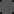

ZenithX is a Fabric mod for Minecraft that lets you host worlds and play with friends — completely free, no server setup required. It works through a secure relay server that connects players directly.
What can ZenithX do?
- Host your singleplayer world so friends can join
- Add friends and see who's online in real time
- Send and receive world invitations in-game
- Configure world settings before hosting
- Receive in-game notifications for requests and invites
- Auto-check for mod updates on launch
Use the sidebar to navigate all features and UI explanations.
Requirements
- Minecraft Java Edition
26.1.2 - Fabric Loader
≥ 0.18.0 - Fabric API
- An internet connection
What happens if the Network/Relay is disconnected?
- If the Network or Relay becomes unavailable, the system will automatically switch to P2P connections.
What is P2P?
- P2P (Peer-to-Peer) allows players to connect directly to each other. Players with NAT traversal support can host and invite others to play together.
Download from fabricmc.net and select Minecraft 26.1.2.
Download Fabric API for 26.1.2 and place it in your mods folder.
Get the latest .jar from the download page.
Put the .jar in your Minecraft mods folder and launch.
ZenithX requires an internet connection to connect to the relay server.
ZenithX lets you host any existing singleplayer world or create a new one, then invite friends through the relay system.
How to host
Opens the world selection screen.
Choose from existing worlds or click "Create New World".
Set game mode, difficulty, cheats, and resource pack sharing.
Press + next to a friend, then click the green "Host World" button.
Adding a Friend
Click "Social" on the Title Screen or "Invite" in the Pause Menu.
The search bar switches to "Enter username..." input.
A friend request is sent. Once they accept, they appear in your list.
Online Status
= online.

= offline.Sending an Invite
While in a hosted world, open the Friends Screen from the Pause Menu. Click + next to any online friend to send them a world invite.
Receiving an Invite
You'll see a notification in-game. Open Friends Screen → Invites tab to accept or decline.
The Invites tab shows a badge with the number of pending invitations.
Appears after selecting a world, before the Friends Screen.
Options
Choose Survival, Creative, Adventure, or Spectator. Sets the default mode for joining players.
Set world difficulty: Peaceful, Easy, Normal, or Hard.
Allow or block commands like /gamemode in the hosted world.
When enabled, your active resource pack is shared with joining players.
Opens the world selection screen so you can choose a world to host.
Opens the Friends Screen to manage friends, requests, and invites.
Shows at the top of the screen when a newer version of ZenithX is detected. Click to download.
Opens the Friends Screen to invite players while already in a world.
Opens the full Friends Screen from inside a world.
Tabs
All friends split into Online and Offline. Also shows requests and invites.
Pending friend requests. Accept with ✓ or decline with ✗.
World invitations you've received. Accept to join the host's world.
Per-Friend Buttons
Sends a world invite to this friend (useful when you are hosting).
Removes this player from your friend list.
Bottom Buttons
Appears when coming from world selection. Launches the selected world and begins hosting.
Closes the Friends Screen and returns to the previous screen.
Do my friends need ZenithX too?
Yes. Both the host and all joining players need ZenithX installed.
Does it work on any Minecraft version?
Currently supports Minecraft Java Edition 26.1.2 with Fabric.
Do I need to port forward?
No. ZenithX uses relay servers, so no router configuration or port forwarding is required. If relay servers are unavailable, ZenithX may use P2P connections when supported.
Is it free?
Yes, completely free.
My friend can't connect — what do I do?
Make sure both of you have the same version of ZenithX and an internet connection. Ask in the Discord for help. Discord
ZenithX contains no malware, viruses, or any malicious code.
What data does ZenithX use?
Only your Minecraft username is transmitted to the relay server so other players can find and connect with you. No passwords, no email, no personal data is ever collected or stored.
What does the relay server do?
It acts as a middleman to connect players. It does not store messages, world data, or any player information beyond the current session.
Is the code open?
Yes. You can inspect the source code on Modrinth and verify everything yourself.
???
- 🎉 First Release 🎉
Version 1.0.0
- Fixed skins not showing correctly (official skins)
- Fixed an issue where some users could not connect to the relay
- Other minor bug fixes and improvements
ZenithX is completely free to use, but if you'd like to support development, you can:
- Share the mod with friends and online
- Leave a positive review on Modrinth
- Join the Discord and give feedback
Your support means a lot and helps keep development going. Thank you!